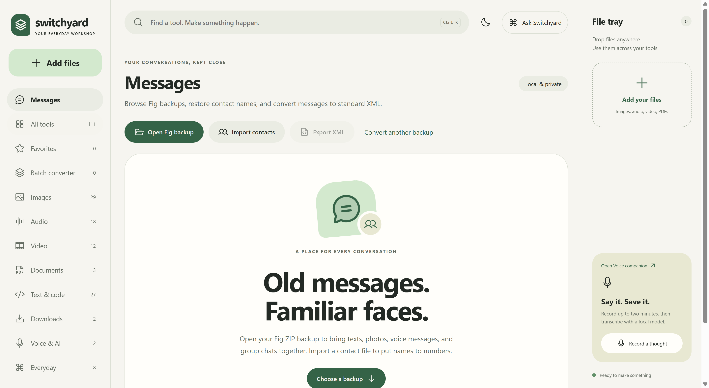

Bring a file
Use Add files or drag files into the window. Press Ctrl + K to find a tool, or star favorites for later.
YOUR EVERYDAY WORKSHOP
Fix a photo. Shape a soundtrack. Bring your old messages home. A thoughtful collection of local tools, together on your Windows PC.
v1.1.2 · Windows x64 · ~953 MB · Unsigned installer
01 / GET COMFORTABLE
One installer brings the app, processing engines, and offline models together.
Visit GitHub Releases and choose Switchyard-Setup-1.1.2.exe. GitHub's source ZIP/TAR archives are for building the app, not installing it.
Compare the file's SHA-256 with SHA256SUMS-1.1.2.txt on the release. The installer is unsigned, so Windows may show a publisher warning. Decide whether to run it after verifying its origin.
Get-FileHash .\Switchyard-Setup-1.1.2.exe -Algorithm SHA256The download is about 953 MB; the installed payload is about 4.04 GB. Allow additional space for extraction, temporary files, and your results. Windows x64 is the packaged target. AI upscaling also needs a Vulkan-capable GPU.
Version 1.1.2 reduces the EXE by 21.46% using stronger compression. All offline engines and models are retained. Installed size is essentially unchanged.
02 / FROM FILE TO FINISHED
Use Add files or drag files into the window. Press Ctrl + K to find a tool, or star favorites for later.
Choose the input and settings. Use crop or timeline controls where available. Create a result, then preview or compare it with the source.
Save elsewhere, reveal the output in Explorer, or use it in another tool. Queue & history keeps each job's results together.
Single-file workspaces let you focus on one input. Enable batch processing when offered, or open Batch converter for a mixed set of files. Choose each file's destination or apply a format to compatible files; unsupported items are identified so other conversions can continue.
In the media editor, use Space for play/pause, arrow keys to step, and I / O to set bounds when the editor has focus. Play the selection before exporting. Changed settings need a new result.
03 / FOLLOW YOUR IDEA
Crop, resize, adjust, and convert. Compare supported results with the original. For real AI upscaling, choose local Upscayl models at 2× or 4×; Lite, Standard, and Digital Art serve different inputs.
Trim audio and video, convert formats, remove a soundtrack, transcribe recordings, or split vocals and instruments. Browser playback supports fewer codecs than FFmpeg conversion.
Use PDF tools, English OCR, and compatible office conversions. PDF-to-document conversion extracts text; it does not reconstruct the page's original layout.
Format structured data, transform text, make QR codes, and use calculators. Ask Switchyard matches your task to existing tools locally; it is not a cloud chatbot.
The batch converter covers images, audio, video, office documents, PDFs, archives, fonts, 3D geometry, subtitles, SQLite tables, and structured data through 13 conversion families. Extension support does not promise support for every file variant. Font and mesh conversions have preservation limits shown in the app.
04 / YOUR CONVERSATIONS, KEPT CLOSE
Bring a Fig backup into a searchable workspace, right inside Switchyard.

| Action | What happens |
|---|---|
| Open Fig backup | Import a Fig ZIP or message NDJSON file for browsing. Search conversations globally or use Find in chat. |
| Import contacts | Load a VCF file to show names instead of numbers. Import before export to include those names. |
| Export XML | Save the open messages in SMS Backup & Restore XML, including supported attachments. This is a backup format, not an Excel export. |
| Convert another backup | Export a different source without replacing the conversations currently open. |
| Clear imported data | Remove the app's imported copy and contact names. Your original backup stays intact. |
Photos and supported audio/video attachments can be viewed in the conversation. ZIP imports allow up to 10,000 files, 2 GB total, and 250 MB per entry; unsafe paths and links are rejected. Failed imports preserve the previous backup. Exports refuse missing binary attachments and preserve an existing destination if conversion fails. Base64 attachments can make XML files large.
05 / SAY IT. SAVE IT.
Open the Voice companion from Switchyard. Its tiny English whisper.cpp model runs on your CPU. Configure dictation and optional pasting before using the shortcut.
Optional pasting only occurs when the original target window still has focus. Command mode is separate and accepts only the nine displayed exact Windows phrases; dictated text is not arbitrary shell input. Closing the window can leave Voice in the tray; use the tray menu to exit.
Record a thought records inside the main app. The companion provides global dictation. Accuracy and speed depend on the microphone, speech, CPU, and background noise; the bundled model is English. Settings and the latest transcript are stored in %LOCALAPPDATA%/SwitchyardVoice.
06 / PICK A TOOL. KEEP YOUR FLOW.
Browse the catalogue shipped in the source. Search a task or filter by workspace.
Upscale photos and artwork with real local Upscayl models. Requires a Vulkan-capable GPU.
Improve contrast and edge definition. Local photo adjustment, not AI deblurring or upscaling.
Fit your image inside exact pixel dimensions.
Extract a precise rectangle from the source.
Compact photographs with adjustable quality.
Lossless images with transparency.
Modern compressed images with transparency.
Highly compressed images for the web.
Turn an image by a chosen angle.
Reflect an image from top to bottom.
Reflect an image from left to right.
Convert color to grayscale.
Apply a smooth Gaussian blur.
Bring edges and fine detail into focus.
Brighten or darken with a multiplier.
Control the strength of color.
Create a photographic negative.
Remove a uniform outer border.
Center-crop an avatar or cover image.
Frame an image with a solid-color border.
Read dimensions, format, channels, and metadata.
Re-encode to PNG without EXIF or GPS metadata.
Uncompressed PCM audio at 48 kHz.
Portable 192 kbps audio.
Lossless audio compression.
Compact audio in an M4A container.
Efficient audio for speech and music.
Export a selected time range.
Target -16 LUFS with a -1.5 dB true-peak ceiling.
Raise or lower the level in decibels.
Make the beginning fade in smoothly.
Fade the final seconds of a recording.
Play a recording backwards.
Adjust duration while preserving pitch.
Mix channels down to one channel.
Frequency-domain noise reduction for steady background noise.
Cut low-frequency rumble.
Soften high frequencies.
Remove silence before the first audible sound.
Read codec, streams, duration and format information.
H.264 video and AAC audio for broad compatibility.
VP9 video and Opus audio.
Export a selected range with accurate re-encoding.
Create a silent copy of a video.
Save a video soundtrack as WAV.
Scale to a chosen width with even dimensions.
Reduce video bitrate with a quality target.
Turn a selected clip of up to 30 seconds into an animated GIF.
Save one frame as a PNG.
Rotate clockwise by 90 degrees.
Flip video horizontally.
Speed up or slow down picture and audio together.
Combine files in the order shown in the file tray.
Save a page range to a new PDF.
Rotate all pages clockwise by 90 degrees.
Reverse the order of pages.
Read page count and document information.
Make one PDF page per image in tray order.
Count words, characters, lines, and reading time.
Convert text to uppercase.
Convert text to lowercase.
Capitalize the first letter of each word.
Make a clean lowercase URL slug.
Sort lines alphabetically.
Keep the first occurrence of each line.
Trim lines and remove blank lines.
Validate JSON and pretty-print it.
Validate JSON and remove insignificant spaces.
Encode Unicode text as Base64.
Decode Base64 into UTF-8 text.
Encode a URL component.
Decode a URL component.
Compute a SHA-256 digest of text.
Generate cryptographically random UUIDs.
Generate a random password locally.
Encode text or a URL as a PNG QR code.
Download a public video URL with yt-dlp.
Download and extract a public video soundtrack as MP3.
Transcribe an audio file using whisper.cpp on your CPU.
Create vocal and instrumental stems with a UVR model.
Convert mixed files with a compatible destination for each file.
Create a deliberate block-pixel effect.
Map an image to a chosen color.
Create a crisp two-tone black and white image.
Export transparent rounded corners.
Arrange a batch of images into a single overview.
Add your own text at the bottom of an image.
Find the most common color groups in an image.
Save each page as a separate PDF.
Remove a page range from a new copy.
Add a small page number to every page.
Stamp every page with a translucent text watermark.
Read embedded text from PDFs. Scanned pages require OCR.
Render each page as a sharp PNG image.
Set the document title and author in a new copy.
Parse quoted CSV fields into JSON objects.
Convert an array of objects into a quoted CSV table.
Encode text for safe display inside HTML.
Decode numeric and common named HTML entities.
Add a line number to every line.
Replace literal text without regular-expression surprises.
Generate a line-by-line diff.
Decode header and claims locally. Does not verify the signature.
Create a paginated PDF from plain text. Uses the built-in Latin font.
Convert meters, kilometers, feet, inches, and miles.
Convert kilograms, grams, pounds, and ounces.
Convert Celsius, Fahrenheit, and Kelvin.
Compare decimal and binary storage units.
Count the calendar days between two ISO dates.
Convert integers between binary, decimal and hexadecimal.
Convert a hex color to RGB and HSL and calculate contrast with white and black.
Extract printed English text using local OCR. No upload.
No matching tools. Try a broader term or choose every workspace.
07 / UNDER YOUR ROOF
Bundled file processing, English OCR and dictation, and vocal separation run locally. Original inputs are preserved. Job outputs, history, and imported Messages data live in Electron's Switchyard user-data folder.
Downloads contact the requested service. YouTube extraction uses bundled yt-dlp and Deno. Site changes, access requirements, and unavailable videos can still prevent a download.
Local storage does not mean encrypted storage. Treat your outputs, imported backups, and saved transcripts as personal files. When reporting a bug, share synthetic examples and redact paths, conversation content, and credentials.
08 / WHEN SOMETHING GETS STUCK
Open Engines, select the correct executable or model, and choose Refresh status. Source checkouts need separately populated engines; the installer includes them. AI upscaling requires a working Vulkan-capable GPU and driver.
Use release 1.1.1 or later, which bundles Deno beside yt-dlp. If you configured a custom yt-dlp path, its environment also needs a supported runtime. An unavailable video may have access or regional restrictions, or the service may have changed. A runtime cannot make every video available.
The browser player supports a narrower codec range than FFmpeg. Convert to a browser-compatible audio/video format and try again. Some phone-specific recordings require conversion first.
PDF-to-document conversion extracts text rather than rebuilding page layout. Text-only PDF creation uses a Latin font. Encrypted, damaged, or unusual file variants may not be supported. Review the output before relying on it.
The installer contains offline processing engines, office conversion tools, models, Python, Electron, and the self-contained Voice companion. Version 1.1.2 compresses these more tightly without removing features. There are no differential automatic updates implemented.
Checks cover representative synthetic files, tool outcomes, native UI flows, and packaged engines. For v1.1.2, the actual NSIS extractor restored all 41,275 files with matching SHA-256 hashes; packaged checks covered the media editor, 13 conversion families, and OCR. That extraction test is not a complete installer/registry upgrade test. See release verification and the outcome audit. These checks do not establish compatibility with every file or PC.
09 / OPEN THE WORKBENCH
Switchyard uses React and Vite for its interface, Electron for the desktop app, and a self-contained .NET 8 Voice companion. Native engines handle media, documents, and models.
Install Node.js and .NET 8, then clone the repository. Downloaded engines and models are not tracked. Populate every required resource in package.json's build.extraResources, including licenses. There is no complete one-command engine bootstrap.
npm.cmd ci
# Populate the engine binaries, models, and licenses first.
powershell.exe -NoProfile -ExecutionPolicy Bypass -File scripts/prepare-youtube-runtime.ps1
dotnet publish voice/SwitchyardVoice.csproj -c Release -r win-x64 --self-contained true -o voice/publish
npm.cmd run build
npm.cmd start
# Package the Windows installer into release-final:
npm.cmd run packagenpm.cmd test runs backend checks; engine-dependent checks need their corresponding resources. Native UI and packaged tests live in tests. Read AGENTS.md for workspace and release verification rules. To contribute, open an issue or pull request describing the behavior and how you checked it.
Switchyard's own code is MIT licensed. Bundled components and model weights have separate terms; the app's MIT license does not cover the whole installer. The existing redistribution checklist still calls for verifying corresponding-source, notice, and model requirements. Read third-party notices before redistributing a build.